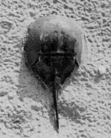
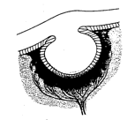
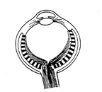
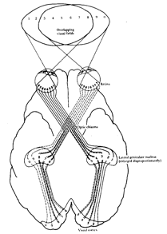
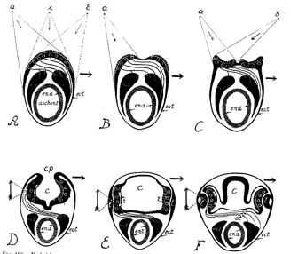

The horseshoe crab (or limulus) is a primitive marine animal, about 1-2 ft long, found in shallow water of the sandy atlantic beaches of North America and in Asia. It looks like a World War I armored vehicle, with its brown leathery covering that resembles a soldier's helmet. Biologists study the horseshoe crab because, unlike most terrestrial species, it has hardly evolved at all over the last 500 million years, and is sometimes called a 'living fossile'. The horseshoe crab has two sets of eyes: the eyes on the sides are primitive versions of the 'compound' or facetted eyes of insects (the horseshoe crab is actually not a crab at all: it is related to spiders). The eyes situated at the top or front of the horseshoe crab are the ones that interest us here: they are typical of the 'simple' eyes of many primitive species like oysters or snails. These eyes operate like the camera obscura or pin-hole camera discussed in an earlier Chapter: they consist in nothing more than an approximately spherical cavity situated just under the surface of the animal's leathery skin, with a small opening that lets the light in, and with light-sensitive nerve-endings directed towards the incoming light clustered around the inside surface of the cavity.

The horseshoe crab on the beach. The photograph will be improved and arrows will be inserted to indicate where the 'simple' and 'compounb' eyes are situated

Cross section of the simple eye of the horseshoe crab (Limulus). The eye is about XXX mm in diameter
Because there is no lens in the opening, the image is of very poor quality. Nevertheless, by sensing which area of the cavity is being illuminated, or which way the light is moving within the cavity, the horseshoe crab can orient itself with respect to a light source. In order to understand the visual environment of horseshoe crabs, a group of scientists at the Marine Sciences Laboratory in Woods Hole have equipped horseshoe crabs with small video cameras and let them go about their daily activities while the video camaras film approximately what the crabs 'see'. The videos show the murky underwater scenery in which the animals paddle around while they seek food and sexual partners. It seems that the crabs use the rhythm of changes in light intensity caused by the wavelets on the water's surface to differentiate normal boredom from the looming shadows of potential mates, and from the darkness correlated with burrowing under the sand in search of food.
On the whole the primitive eye of the horseshoe crab seems like a fairly reasonable kind of structure. Nature could now have just followed della Porta's "secret" idea for improving the camera obscura, and put a lens at the entrance to the cavity. By use of the lens, the aperture could be made bigger and thus the image brighter, without losing detail in the image.
(The lens would focus the light to form an image at the back of the eye, and would overcome the problem inherent in the pinhole camera which we noted earlier, namely the fact that an image with fine spatial resolution must be very dim. )
Indeed Nature did put a lens at the entrance to the cavity. However in doing so, it appears to have got confused: whereas in the primitive eye of the horseshoe crab the light comes in and directly strikes the light-sensitive receptors in what would appear to be a sensible way, in the vertebrate retina, where a lens has now been added, the light sensitive retina at the back of the eye is now inside out, with the photoreceptors pointing away from the light instead of towards the light. Furthermore, the signals from the photreceptors do not pass directly to the optic nerve, but are first transmitted to the ganglion cells, which are themselves interconnected by several layers of neural material. But unfortunately, the ganglion cells and their interconnecting cells lie on the front side of the retina, so the incoming light must traverse this neural material before impinging on the photoreceptors. Finally, the nerve fibres that connect each point of the retina to the optic nerve also pass over the front surface of the retina.

Cross section of a typical vertebrate eye, which is constructed in a curious, inside-out fashion. The photoreceptors are facing away from the light! The nerve fibres that link the receptors to the optic nerve pass over the front rather than the back surface of the retina.
The fact that the nerve fibres and ganglion cell layer obscure the passage of light to the photosensitive layer is not too catastrophic, since they are fairly transparent. More bothersome is the fact that there are about one million such nerve fibres, and they must all come together into a bundle and pass out of the eyeball, where they form the cable that constitutes the optic nerve. At that point, called , the head of the optic nerve, the optic disc or the papilla, there is no room for any light sensitive receptors at all, and so there is a large blind spot: as we shall see in the next section, in humans it is big enough to engulf a lemon held at arm's length.
Another very great problem concerns the blood vessels that nourish the retina. The retinal vein and artery come into the eyeball couched within the optic nerve. Their entrance point is therefore also at the blind spot, and there is a sort of knot where the blood vessels divide up. This knot covers more than the head of the optic nerve, and so further deteriorates vision in the vicinity of the blind spot. (It may do so to a greater or lesser degree depending on blood pressure and therefore possibly on emotional factors, as well as on lighting conditions[1]). From the blind spot the blood vessels branch out in a dense mesh irrigating the whole retina. Curiously however, again, the vessels cover the retina from the front, that is, they mask the photoreceptors from the incoming light. Though not totally opaque, the blood vessels must interfere with vision and cast a web of shadows all over the retina.
In sum, the whole structure of the vertebrate retina seems inside out, as though in a photographic camera, the film had been inserted with the paper side rather than the light-sensitive side facing towards the incoming light. Presumably the reason for this inside-out structure of the vertebrate eye is related to the fact that evolution, in addition to providing the eye with a lens, has rendered it mobile. A simple cavity in the animal's surface has been replaced by a spherical eyeball that can turn freely within its bony socket cushioned with fatty tissue. Somehow, perhaps so as to allow the optic nerve and the eye's blood supply to form a flexible cable at the back of the eyeball, the evolution of this system seems to have necessitated the inside-out structure of the retina.
DECUSSATION
The inverted structure of the retina may also be linked to another curiosity of the visual system, namely the way in which the optic nerves from each eye are connected to the brain: instead of staying on their own side of the head, the optic nerves 'decussate'. That is, the nerves from each eye pass over to the opposite side of the brain, crossing like the greek letter "chi".(c) at a place called the 'optic chiasma' underneath the front of the brain. In lower vertebrates like fish and birds the decussation is complete, whereas in higher, (mammalian) vertebrates, the decussation is partial, with only a fraction of the visual field crossing over to the opposite side of the brain. The fraction of uncrossed nerve fibres seems to be proportional to the degree of overlap of the visual fields, so whereas horses, with eyes on the sides of their heads, only have

Decussation of the optic pathwxays at the chiasma, showing how different parts of the visual field are represented in the visual cortex. From PH. Lindsay and D.A. Norman, Human Information Processing, NY, Academic Press, 1977. NOTE this figure should be modified to show the blind spot of each eye...
about one sixth of the fibres that are uncrossed, dogs have about one quarter, cats about one third, and man attains one half of the fibres that stay on their own side of the brain[2]. Presumably the reason for this correlation of the degree of decussation with the degree of overlap of the visual fields is related to the perception of depth. In the case of animals having their eyes facing towards the front, by combining the slightly displaced views obtained by the two eyes, the brain can obtain depth information. Partial decussation instead of total decussation ensures that the two slightly displaced views can be combined within the same cerebral hemisphere.

Cross-sections through the head region of hypothetical ancestors of the vertebrate, showing dfferent stages proposed by Polyak (1957) in the evolution of the eye.s In A the eye is merely a light-sensitve plate on the 'back' of the head region of an earth-worm like animal. The nerve fibres are almost totally decussated. A 'simple', pin-hole eye is formed by stage D in which the vesicle (c) forms an optic cup. However, light can also penetrate by transparency through the sides of the animal, and this mode of functioning is gradually preferred, so that by stage F the animals skin has been modified to form a lens. Labeling: end: endoderm: ect: ectoderm: archent: archenteron or primitive gut. md: mesoderm. Shaded arrows indicate direction of response or body movement when light impinges on the left half of the organism.. For more discussion of this hypothesis see Polyak (1957, p. 774 ff.: also Walls, 1942; p. 117 ff)
Both the inverted structure of the retina and the decussation of the optic pathways are intriguing aspects of the visual system that many workers have sought to explain[3]. One interesting hypothesis suggests that this peculiarity is related to the evolutionary history of vertebrates. It is often assumed[4] that the development of embryos recapitulates the evolutionary history of a species (the human embryo goes through stages that suggest amphibian ancestors). If this assumption is correct, then the development of the eyes of vertebrate embryos suggests that the eye may have suffered a series of surprising adaptations and inversions in the course of evolution. In the most primitive period, when the "proto-vertebrate" animal was still something like a worm, the eye may have merely been a photosensitive plaque on the surface of the animal's head. In a more advanced species, the plaque will have become concave, ultimately forming a cavity that constitutes a 'simple' eye functioning like a camera obscura. In this arrangement, photosensitive elements on one side of the retina will have been connected to muscle effectors on the opposite side of the organism's body, perhaps in such a way as to cause evasive action following stimulation by light[5]. At a later point in evolution, a critical inversion will have occurred: Nature may have discovered an advantage in making use of light coming in by transparency through the skin on the sides of the head. Progressively the eye at the front of the head will have been abandoned. The lateral skin may then have thickened and transformed into the optic system consisting of cornea and crystalline lens which consititues the lateral eyes of today.
Parenthetically it is interesting to note that embryology seems to go against the often cited idea that the eye is a direct outgrowth of the brain. On the contrary, it might be more reasonable to say that the brain is actually a direct outgrowth of the eye! Indeed, brains are phylogenically more recent than eyes, and primitive animals have highly developed eyes, but virtually no brains. For example in the household fly, the eye is highly developed and specialised, but the 'brain' consists of only a few neural stations connecting the eye to the muscles that control the legs and wings.
[1]cf Le Grand, 1956, Vol. III, p. 157
[2]cf. Walls (1942, p. 319)
[3]Polyak (1957), Ch. XIII, gives an excellent coverage of older material. See also Walls (1942), Ch. 5. As concerns the fact that there is a decussation at all, the great brain physiologist Ramon y Cajal suggested that this allows the neural image of the outside world to be oriented in such a way that the midline of the visual field is represented near the midline separating the visual areas of the left and right cerebral cortices. However, as pointed out by Walls, this can also be achieved in other ways, without decussation. Furthermore, decussation occurs not only in the visual pathways but at many stages of other sensory and motor pathways. It is therefore likely that decussation has a more general explanation. On the other hand, Cajal's additional idea that the degree to which decussation is partial is related to binocular fusion seems to be the accepted dogma today.
[4]This is Haeckel's "first law of biogenesis", according to Polyak (1957) p. 771.
[5]It appears that many muscular systems are connected in a crossed-over way, and decussation is not confined to the optic tract. It is interesting that Braitenberg's "Vehicles" are connected in this way. Nevertheless, it is not obvious why the same behavior could not be obtained instead by using non-crossed over connections and inverting the direction of movement of the muscles or the sign of the light sensitivity.